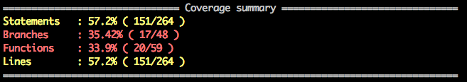
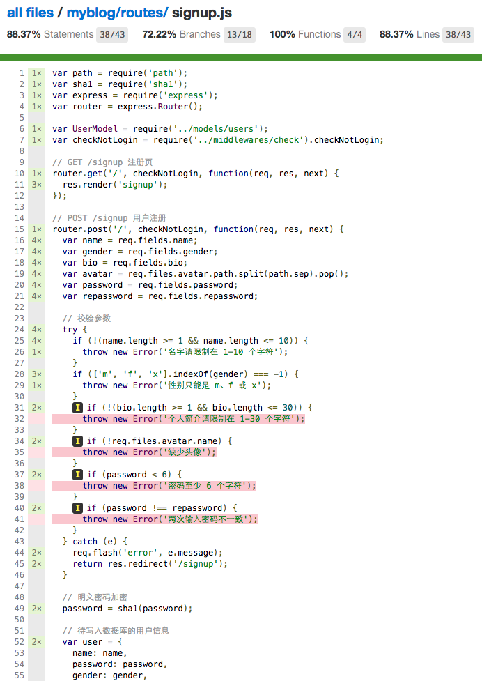

4.14.1 mocha 和 supertest
mocha 和 suptertest 是常用的测试组合，通常用来测试 restful 的 api 接口，这里我们也可以用来测试我们的博客应用。在 myblog 下新建 test 文件夹存放测试文件，以注册为例讲解 mocha 和 supertest 的用法。首先安装所需模块：
|
|
修改 package.json，将：
package.json
|
|
修改为：
|
|
指定执行 test 目录的测试。修改 index.js，将：
index.js
|
|
修改为:
|
|
这样做可以实现：直接启动 index.js 则会监听端口启动程序，如果 index.js 被 require 了，则导出 app，通常用于测试。
找一张图片用于测试上传头像，放到 test 目录下，如 avatar.png。新建 test/signup.js，添加如下测试代码：
test/signup.js
|
|
运行 npm test 看看效果吧，其余的测试请读者自行完成。
4.14.2 测试覆盖率
我们写测试肯定想覆盖所有的情况（包括各种出错的情况及正确时的情况），但光靠想需要写哪些测试是不行的，总也会有疏漏，最简单的办法就是可以直观的看出测试是否覆盖了所有的代码，这就是测试覆盖率，即被测试覆盖到的代码行数占总代码行数的比例。
注意：即使测试覆盖率达到 100% 也不能说明你的测试覆盖了所有的情况，只能说明基本覆盖了所有的情况。
istanbul 是一个常用的生成测试覆盖率的库，它会将测试的结果报告生成 html 页面，并放到项目根目录的 coverage 目录下。首先安装 istanbul:
|
|
配置 istanbul 很简单，将 package.json 中：
package.json
|
|
修改为：
|
|
注意：如果 Windows 下报错，尝试修改为：
见 #201.
即可将 mocha 和 istanbul 结合使用，终端会打印：

打开 myblog/coverage/Icov-report/index.html，如下所示：

可以点进去查看某个代码文件具体的覆盖率，如下所示：

红色的行表示测试没有覆盖到，因为我们只写了 name 和 gender 的测试。
上一节：4.13 日志
下一节：4.15 部署